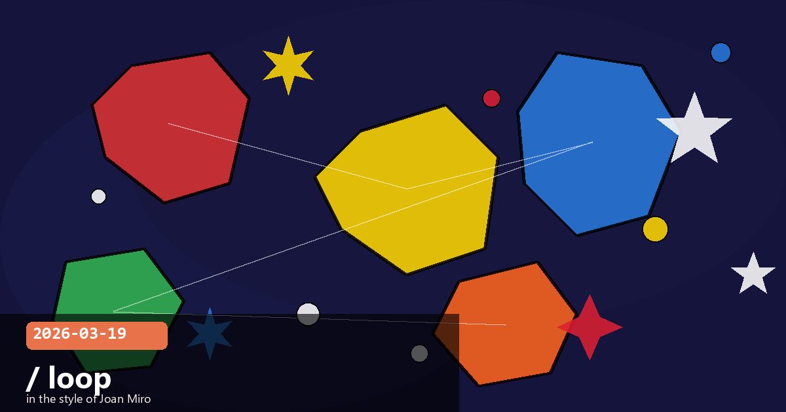

/loop Command, Claude Marketplace, Market Share & AI SRE

💡 Claude Code /loop — Turn Your Session into an Autonomous Background Worker
Introduced in Claude Code v2.1.71 (early March 2026), the /loop
command is a session-scoped cron scheduler that lets you give Claude a prompt and a cadence and
have it repeat automatically — no manual re-triggering required. Closing the terminal cancels
everything; this is deliberately a lightweight, session-bound tool, not a persistent background
daemon. The underlying primitives are three native tools exposed to skills:
CronCreate, CronList, and CronDelete.
Basic syntax
/loop 5m check the deployment and report any errors
/loop 30m run the test suite and summarise failures
/loop 1h scan open pull requests and flag stale ones
Supported interval units are s (seconds), m (minutes),
h (hours), and d (days). Intervals below one minute are rounded up
since the underlying cron has one-minute granularity. Each scheduled task receives an 8-character
ID that you can use with CronDelete to cancel it individually.
Key constraints to know
Session-only — tasks are cancelled when Claude Code exits. Restarting the
session clears the task queue.
Idle-gated — a task only fires when Claude Code is idle; if you are mid-conversation,
the next execution waits until you are done.
3-day expiry — recurring tasks automatically expire 72 hours after creation,
fire one final time, then delete themselves. This prevents forgotten loops from running
indefinitely.
50-task limit — a session can hold at most 50 scheduled tasks simultaneously.
Practical use cases
Monitor a CI/CD deploy every 5 minutes and notify you in-session when it goes green.
Scan an error log every hour overnight and file a pull request if a new pattern is detected.
Summarise overnight commit activity every morning before you start work.
Watch for deprecated API patterns in a growing codebase on a daily cadence.
Tip Combine /loop with a custom subagent
(defined in .claude/agents/) to keep the main session context clean. The loop
fires the subagent, which does its work in its own isolated window and returns only a brief
summary to the main session.
Cost awareness Each loop execution consumes tokens like a normal turn.
A tight interval on a verbose task can add up quickly. Use CronList to audit
active tasks and /effort low for mechanical monitoring prompts that don't need
deep reasoning.
claude-codeloopcronautomationscheduled-tasks
💡 Claude Marketplace — Anthropic's Enterprise App Store (No Commission)
On 6 March 2026, Anthropic launched the Claude Marketplace
in limited preview — a B2B procurement platform that lets enterprises with existing Anthropic
spending commitments buy Claude-powered software from vetted third-party partners, all within a
single billing relationship. Crucially, Anthropic takes no commission on
marketplace transactions, positioning it as a procurement convenience rather than a revenue
share play.
Launch partners
GitLab — AI-assisted DevSecOps workflows
Harvey — legal contract drafting and analysis
Lovable — AI-accelerated front-end development
Replit — cloud-native coding and deployment
Rogo — financial data analysis for investment professionals
Snowflake — AI-powered data cloud integrations
How procurement works
Enterprises that have signed annual API spend commitments with Anthropic can apply a portion of
that commitment to marketplace purchases — so the cost flows through a single vendor relationship
rather than requiring separate contracts with each ISV. Payment is handled by Anthropic; the
partner receives their revenue directly. Organisations without an existing spend commitment can
still browse, but must negotiate separately.
Strategic context The Marketplace extends Anthropic beyond a model API
provider into a distribution layer for Claude-powered software. Combined with the self-serve
Enterprise plan (launched February 2026) and the $100M Partner Network (March 12), it completes
an end-to-end enterprise go-to-market stack: sell, deploy, and expand — all through
Anthropic-managed channels.
Tip for developers If you are building a Claude-powered product targeting
enterprise customers, the Marketplace is a distribution channel worth applying for. Anthropic
takes no cut, and your product surfaces directly in procurement conversations that enterprise
buyers are already having with Anthropic.
marketplaceenterpriseB2BprocurementAnthropic
💡 Claude's Business Subscription Share Jumps 4.9 % in a Month
Data published by fintech company Ramp on 19 March 2026 shows that Anthropic's
business software subscriptions grew 4.9 % month-over-month in February 2026 —
the same period in which OpenAI's share fell 1.5 %. The headline numbers: OpenAI still
leads at 34.4 % of business AI subscriptions tracked by Ramp, but Anthropic
has climbed to 24.4 %, up from roughly 4 % just twelve months earlier.
The speed of the shift
In January 2026 alone, Anthropic gained 2.8 percentage points while OpenAI lost 0.9.
"Nearly one in four businesses on Ramp now pays for Anthropic; a year ago it was one in
25."
Among companies buying AI for the first time, Anthropic wins approximately
70 % of head-to-head decisions against OpenAI.
Revenue trajectory
Anthropic's annualised revenue grew from $1 billion in December 2024 to $4 billion by July 2025,
$9 billion by December 2025, and $14 billion by February 2026 — a roughly
14× increase in 14 months. The company now serves more than 300,000 business customers.
Why it matters for developers Rapid enterprise adoption of Claude translates
directly into demand for Claude API skills, Claude Code expertise, and Claude-powered product
development. The market is rewarding strong coding and agentic capabilities — the exact
differentiators Anthropic has invested in most heavily over the past six months.
market-shareenterprisegrowthAnthropicbusiness
💡 Fixing Claude with Claude — Anthropic's AI Reliability Engineering in Practice
On 19 March 2026, a member of Anthropic's AI Reliability Engineering (AIRE)
team spoke at QCon London and published findings on using Claude as an internal SRE tool — in
effect, using the model to help maintain the infrastructure that runs the model. The report is
a candid account of both the genuine productivity gains and the current limitations that prevent
Claude from fully replacing a human site reliability engineer.
What AIRE does
Anthropic's AI Reliability Engineering team partners with internal teams to improve reliability
across every serving path: from the SDK through network and API layers, to serving infrastructure
and accelerators. Claude agents assist by monitoring dashboards, correlating incidents, drafting
runbooks, and proposing mitigations — all faster than a human on-call engineer could scan the
same signal volume.
Where Claude excels
Pattern recognition at scale — scanning large volumes of logs and metrics
to surface anomalies a human might miss in the noise.
Runbook drafting — given an incident description, Claude rapidly drafts a
structured runbook that on-call engineers then validate and execute.
Correlation vs. causation — the AIRE team explicitly called out Claude's
tendency to mistake correlated signals for root causes, which can send engineers down the
wrong diagnostic path.
Novel failure modes — Claude is effective on patterns seen in training but
less reliable on genuinely new infrastructure failure classes.
Autonomous remediation — all mitigations still require human approval;
fully autonomous incident resolution remains out of scope for now.
Takeaway for teams building AI ops tooling Use Claude for the
intelligence amplification layer — faster anomaly detection, better summaries,
quicker runbook drafts — while keeping humans in the loop for all remediation decisions.
Gate autonomous actions behind an explicit approval step until you have high confidence in
the model's causal reasoning on your specific infrastructure.
Practical resource Anthropic has published a reference implementation
in the Claude cookbook:
The Site Reliability Agent
— a worked example of an SRE agent built on the Claude Agent SDK.